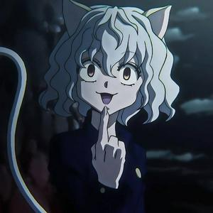

|  | BIOGRAFIA |
|---|---|
|
Neferpitou é uma das Guardas Reais do Rei das Formigas Quimera, criada para proteger o rei com lealdade absoluta e fanática. Com aparência felina humanóide e comportamento que alterna entre curiosidade infantil e crueldade calculista, Pitou é o primeiro guarda a nascer e inicialmente o mais forte. Cientista cruel que experimenta com humanos sem remorso, Pitou desenvolve uma fascinação perturbadora por combate e anatomia. Apesar de sua natureza monstruosa, demonstra desenvolvimento emocional genuíno, especialmente devoção patológica ao rei Meruem. Sua lealdade transcende a própria morte, com seu Nen se tornando ainda mais poderoso após a morte para cumprir uma última ordem.
| |
| ARMAS | |
|
Garras e Cauda: Armas naturais extremamente afiadas capazes de cortar aço como manteiga. | |
| Habilidades | |
|
Terpsichora: Manipula o próprio corpo como marionete, aumentando drasticamente velocidade, reflexos e poder destrutivo além dos limites biológicos. Doctor Blyth: Manifesta uma entidade médica que pode curar qualquer ferimento ou realizar cirurgias impossíveis. Nen Puppet: Cria clones de si mesma ou outros com porcentagem de seu poder. . . |